Games104笔记-4-渲染系统（一）：游戏引擎中的渲染实践
本文为课程Games104第四节课：Basics of Game Rendering的个人笔记。
导论
理论和实践
理论计算机图形学通常专注于单一的物体类型，例如实现一个高质量的半透明材质、水面焦散等。同时更关注其算法在理论上的正确性和物理上的精确性，例如我们所熟知的基于辐射度量学的渲染方程就是一个物理正确的图形学模型。
理论图形学也不是没有在乎效率，只不过没那么严格。像30FPS就可以认为是实时的，10FPS认为是可交互的。Out-of-Core-Rendering则是当数据量过大时使用外部分布式存储协同渲染的技术。
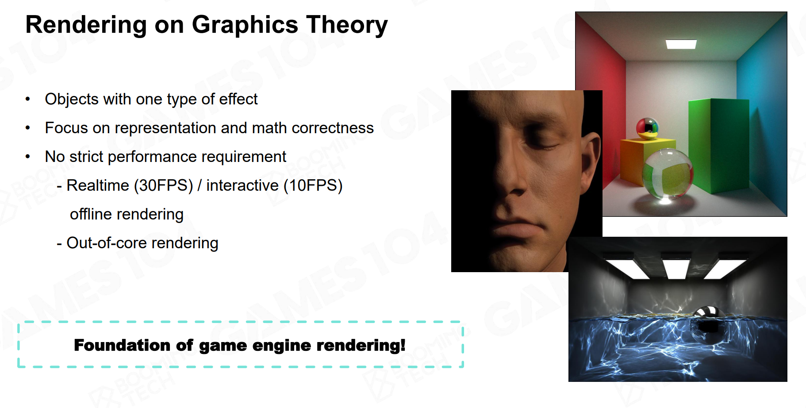
理论图形学为游戏引擎的渲染提供了重要的理论基础。但是游戏引擎的渲染系统并非简单地应用理论算法，而是在严苛的约束下进行系统性的工程实践。
游戏渲染的挑战
第一个挑战是可渲染物体的多样性：
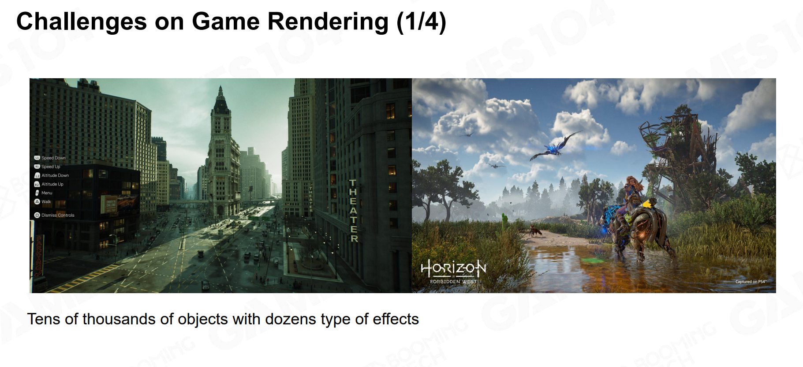
场景中可能存在成千上万种对象，例如角色、植被、水体、云雾等。针对不同的材质和对象，需要应用不同的渲染算法。
另外整个场景还需要应用统一的光照、阴影计算，以及大量后处理算法等。
第二个挑战是对于底层硬件的高效利用：
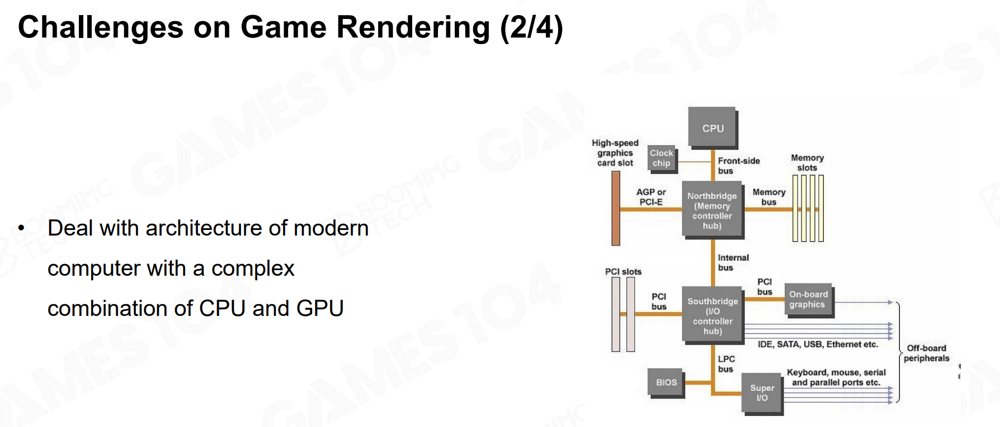
游戏渲染追求极致性能，因此所有算法都应当为当代硬件架构进行深度优化，例如GPU的并行计算能力、内存带宽等。
第三个挑战是如何在有限的性能运算中维持渲染的质量和稳定性：
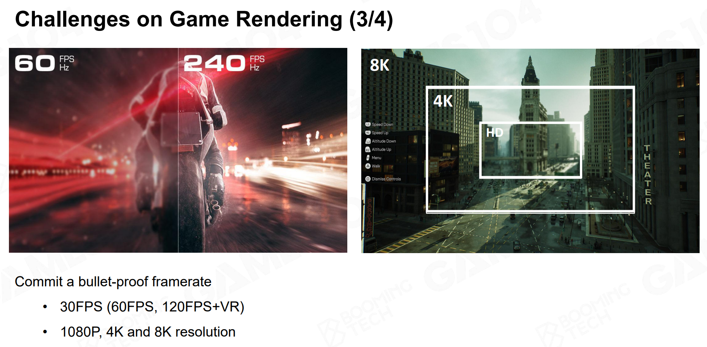
游戏渲染对于性能有极高要求，它必须在固定的时间预算内完成一帧的绘制，并且要保持帧率稳定。另外屏幕分辨率也逐渐从1080p到4K甚至8K，这些都对渲染系统提出了更高的性能要求。
第四个挑战是只有有限的共享CPU资源：
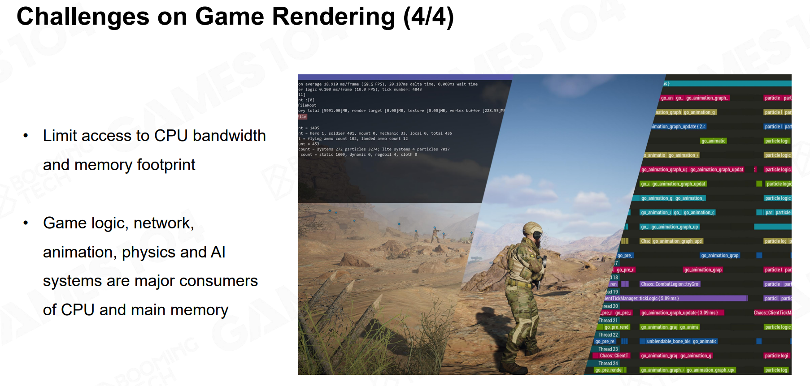
在游戏中，不只有渲染系统使用CPU。其它AI、物理、Gameplay等系统也需要占用CPU资源。因此在现代游戏开发中，通常会包含自动化性能分析工具（Profiler）来监控每个模块的资源占用，如果渲染系统占用过多CPU资源，就需要进行性能优化。
总结，游戏引擎的渲染系统是一个需要在各种约束下在现代硬件上实现的高度复杂的系统工程。
渲染基础
渲染管线
这里Games101都讲过了，主要作为复习。
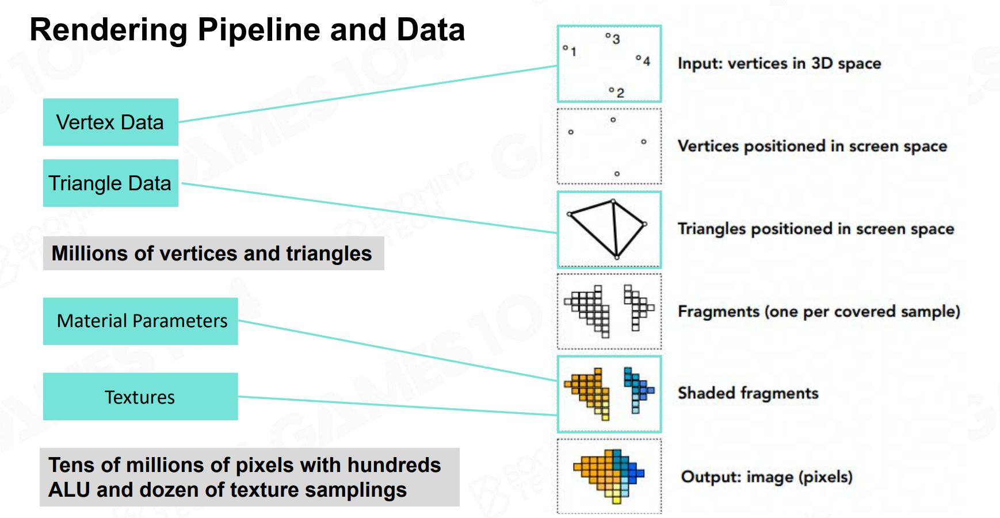
大致流程如下： - 给定空间中的顶点连接成三角形面片 - 通过MVP变换将三维空间的物体投影到二维屏幕上 - 将三角形进行光栅化，得到像素级的片段 - 对每个片段根据材质、纹理以及光照等信息进行着色，计算其最终颜色值
这里涉及到了许多ALU运算以及Texture采样操作。课程给了一个像素着色器的例子：
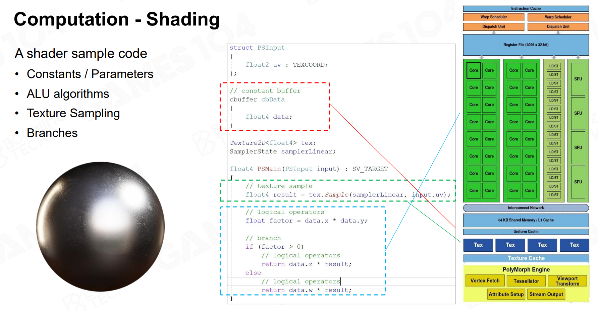
纹理采样
纹理采样事实上是一个极其重要且计算成本高的操作。在Games101其实也提过，如果单纯根据像素中心uv在对应Texture上进行采样，是会存在所谓的走样（Aliasing）问题的。例如当一个带有精细纹理的物体距离摄像机非常远时，屏幕上的一个像素可能对应纹理图上的一个非常大的区域。如果只简单地取其中一个点，随着物体的微小移动，采样点会发生跳跃，导致画面出现闪烁和锯齿。
因此一种解决方式是采用Mipmap和滤波。Mipmap会预先为纹理生成一系列从高到低不同分辨率的纹理版本，根据当前像素在纹理上的覆盖面积选择合适的Mipmap级别进行采样。同时使用双线性或三线性滤波来平滑采样结果，减少走样现象。

计算成本则涉及到访问8次纹理toxel，7次线性插值。
GPU
对于图形和引擎开发者而言，深刻理解GPU的硬件架构是设计高效渲染系统的基础。
SIMD和SIMT
SIMD是Single Instruction, Multiple Data的缩写，指的是单指令多数据流。它的核心idea是一条指令可以同时对多个数据元素进行操作。例如对于两个四维齐次向量的加分，一个SIMD指令就可以同时处理这四个分量的加法运算。在图形学中，坐标变换、颜色混合等操作都大量涉及到这类向量运算。
SIMT是Single Instruction, Multiple Threads的缩写，指的是单指令多线程。它的核心idea是一条指令可以同时被多个线程执行，每个线程处理不同的数据元素。例如在GPU中，成千上万的像素着色器线程可以同时执行同一条指令，但每个线程处理不同像素的数据。这种并行执行模型使得GPU能够高效地处理大规模数据并行的图形渲染任务。
- 如果SIMD能带来4倍的效率提升，那么在SIMT架构下，若有100个Core执行相同指令，理论上能再带来100倍的效率提升，总效率提升达到400倍。
- 因此，要想完全榨干GPU的性能，我们的算法设计就必须遵循SIMT的模式：让大量的线程（像素、顶点等）运行完全相同的代码，只是处理的数据不同。
GPU架构
虽然现代GPU架构比课程中给出的费米（Fermi）架构更加复杂，但其核心组织是相似的，具有高度重复的层级结构。
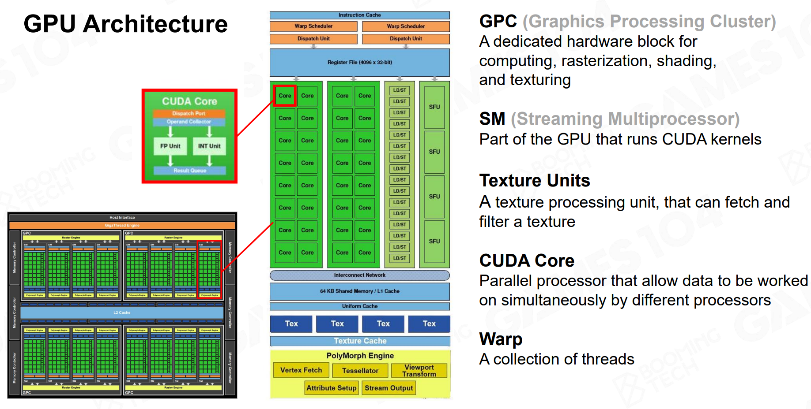
- GPC (Graphics Processing Cluster / 图形处理集群)：GPU内部最大的功能模块划分，可以看作一个独立的“处理分厂”
- SM (Streaming Multiprocessor / 流式多处理器)：GPC内包含多个SM，是GPC内指令分派的基本单元。
- CUDA Core：SM内包含数十个甚至上百个CUDA Core，是实际执行计算的基本单元。
SM内除了通用的计算核心CUDA Core，还包含纹理单元（Texture Unit）来加速硬件采样（自动做上面Mipmap的工作？）、特殊函数单元（SFU - Special Function Unit）来加速复杂的诸如三角函数、指数函数等特殊数学函数的计算、Tensor Core加速AI相关的矩阵运算、RT Core加速光线追踪相关的计算等。
GPU的性能源泉在于其大规模并行架构。所有的图形和计算任务最终都会被分解，并分发到众多SM单元中，由其内部成百上千的CUDA Core协同处理。
数据流动
冯诺伊曼架构的计算机有个核心问题，就是将计算单元（CPU和GPU）和数据存储单元（RAM和显存）物理分开了。数据流动事实上非常昂贵，下图就展示了这么一个概念：
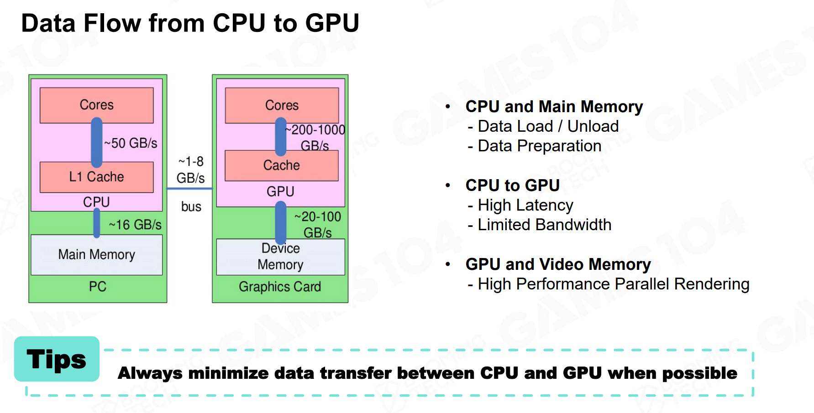
如果一个渲染任务，我们需要在CPU端设置Drawcall数据，发送给GPU，GPU算完再传给CPU做决策，然后处理完CPU可能还会继续向GPU发送数据，这中间涉及到总线传输，过程事实上是非常慢的。
课程提到，尽可能保证数据单向流动（CPU -> GPU），并极力避免从GPU回读数据到CPU。所有依赖GPU计算结果的后续决策尽可能地在GPU上执行，所谓的Compute Shader就是做这种事情。
Cache
前面提到了冯诺伊曼架构的核心问题，但事实上在计算单元上是有所谓的缓存区的，这东西非常滴珍贵，容量也比较小。作为引擎程序员我们必须要关注代码的缓存友好性。假设一次CPU加法运算只需要一个时钟周期，但是从RAM读数据需要超过100个时钟周期，而在Cache中读数据可能只需要几个时钟周期，那么如果我们的代码频繁访问RAM中的数据，就会导致性能大幅下降。
我们要做的就是尽可能提高缓存命中（Cache Hit）率，减少未命中（Cache Miss）。
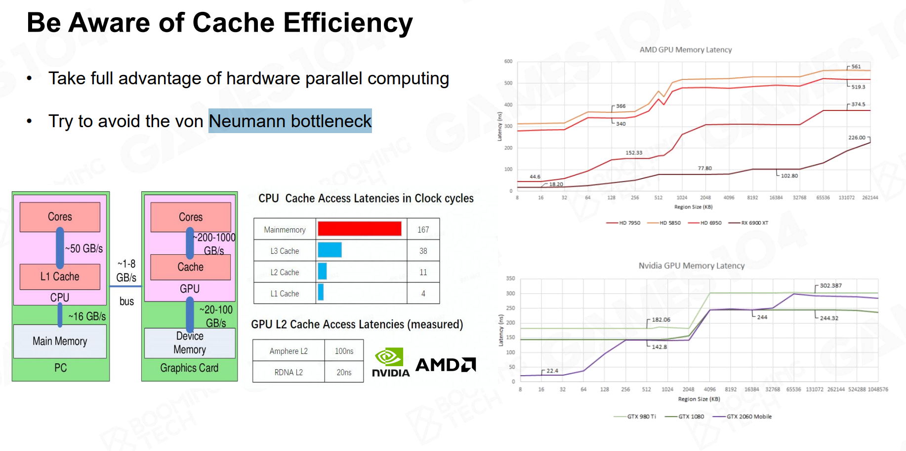
总结GPU可能的性能瓶颈
- Memory Bound：访存瓶颈，指的是GPU的计算能力远远超过其内存带宽，导致GPU核心经常处于等待数据的状态。
- ALU Bound：计算瓶颈，通常发生在有极其复杂着色器计算的场景。
- TMU（Texture Mapping Unit）Bound：纹理采样瓶颈，发生在大量纹理采样操作的场景。
- BW（Bandwidth）Bound：带宽瓶颈，指的是GPU内部不同模块（或者和CPU）之间的数据传输受限，导致性能下降。
Renderable
上节课我们提到，游戏中任何事物都可以被描述为所谓的GameObject。而GO可以被描述成组件的集合。
因此很容易想到，我们需要派生一类特殊的组件来支持渲染，使GO成为所谓的可渲染对象（Renderable）。在UE中我们熟知的StaticMeshComponent和SkeletalMeshComponent就是两种典型的可渲染组件。
一个基础的Renderable对象通常有以下三个部分组成：
- Mesh：定义了物体的几何形状，通常由顶点、边和面组成。
- Material：定义物体表面的光学属性，和具体着色算法相关。
- Texture：定义物体表面的细节信息，例如颜色、法线等。
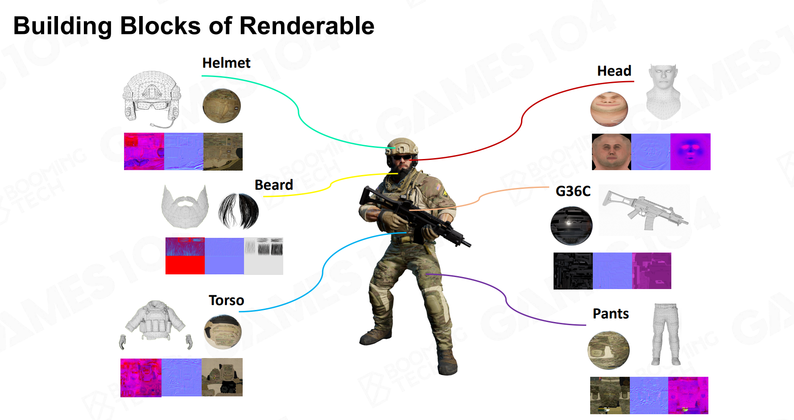
Mesh网格
图形学中最基础的几何图元是三角形，三角形包含三个顶点，每个顶点可以有位置、法线、颜色、贴图UV等信息。简易代码如下：
1
2
3
4
5
6
7
8
9
10struct Vertex {
Vector3 position; // 顶点位置
Vector3 normal; // 顶点法线
UByte4 color; // 顶点颜色
Vector2 uv; // 纹理坐标
};
struct Triangle {
Vertex m_vertex[3]; // 三角形的三个顶点
};
但是考虑到一个顶点可能会被多个三角形共享，因此提出所谓的顶点缓冲和索引缓冲（没记错的话应该就是所谓的VBO和IBO？）
顶点缓冲存储所有唯一的顶点属性，索引缓冲用来真正刻画三角形。
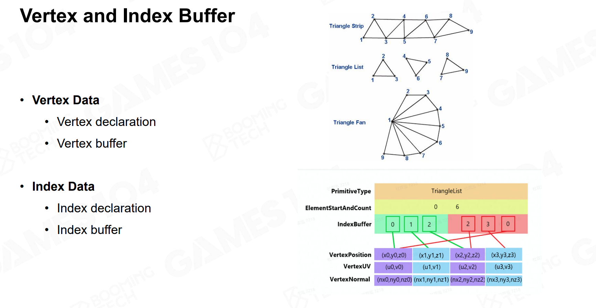
历史上还有一种优化叫作为的Triangle Strip，类似一笔画。其Idea是定义完最初的两个顶点后，后续每增加一个顶点，就能与前两个顶点组成一个新的三角形。这样似乎连索引缓冲也去掉了，还非常的Cache友好，但现在似乎没怎么用？课程说是现代GPU性能极为强大，这种优化没必要了。
思考：为什么法线这个属性必须得定义在顶点上？似乎法线这个属性属于一个面才对呀
考虑最简单的立方体，它边缘的顶点事实上被三个面共享，但是三个面对应的法线显然不一样。所以事实上实际存储时会分成三个不同的顶点处理。而如果通过三角面的法线来计算顶点法线的话，边缘处的顶点就会有一个平均的法线，显然这个法线不准确。
思考2：顶点法线属性不就是为了插值出面法线而服务的吗？课程讲的用面法线计算出顶点法线，这个顶点法线有什么用，为什么不直接用存的面法线？
事实上这涉及到着色策略。一个三角面如果所有地方的法线是一样的，这其实叫做Flat Shading（平面着色），最终渲染出来的效果就是每个三角形都是一个平面，边缘处会有明显的分界线。
而如果我们定义了顶点法线，那么在光照计算时就可以对每个像素进行插值计算，得到一个平滑的过渡效果，这就是所谓的Gouraud Shading（古罗德着色）或者Phong Shading（冯氏着色）。因此顶点法线的定义是为了实现更高质量的渲染效果，而不仅仅是为了计算面法线。
Material材质
材质这东西比较复杂，下面是课程给出的一张图：
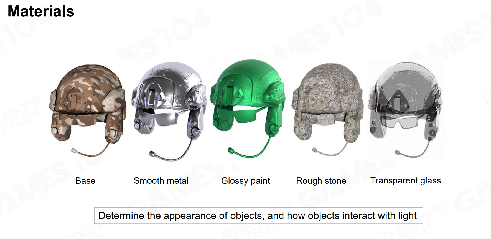
材质系统定义了物体的视觉属性，例如它是光滑的金属、粗糙的石头、柔软的布料还是半透明的塑料。
课程提到了物理材质，这个UE里其实也有所谓的Physics Material，主要是为了物理系统提供一些属性，例如摩擦力、弹性等。虽然它也叫材质，但它和渲染系统中的材质是完全不同的东西。
我认为材质里面有什么其实和着色模型密切相关，在Games101我们重点学的Phong模型，它就比较简单。现代主流（UE里默认的Default Lit）则是基于PBR，使用更符合物理规律的金属度Metallic，粗糙度Roughness等来描述材质，这些是Phong没有的。
Texture纹理
在现代 PBR 工作流中，纹理的作用远不止是提供颜色。它们是驱动材质属性变化的关键数据。课程给了一个生锈铁球的例子：
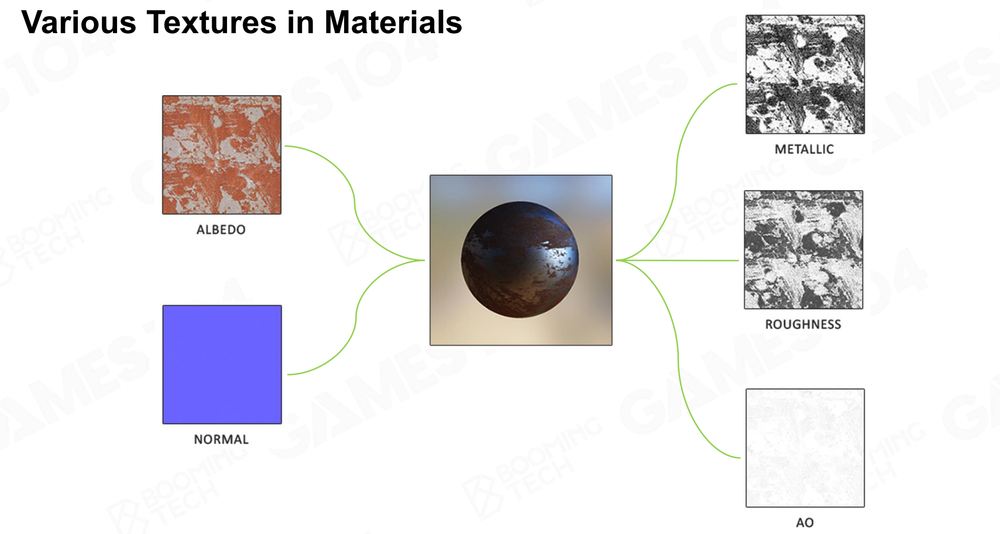
Shader着色器
Shader 本质上是程序员编写的源代码，但在引擎的渲染流程中，它被当作一种数据资产来处理和使用。我们经常看到的编译着色器事实上就是引擎将这些可能用GLSL或者HLSL编写的Shader源代码编译成GPU能够直接执行的二进制格式，然后引擎将其连同Mesh和纹理等一同提交给GPU，GPU在渲染管线中会调用这些自定义着色器来完成对顶点和像素的处理。
思考：我记得初始化UE的时候要编译上万个Shader，但是根据我学习Games101和202的经验，Shader真的有那么多吗？例如PBR模型的Shader其实也就那么几个，为什么要编译上万个？
TODO（不懂捏）
引擎中的渲染对象
SubMesh子网格
游戏里的角色，它的身上可能有不同的材质，那么针对这么一个渲染对象，它的Mesh我们该怎么整理呢？
课程里提了一个概念叫做SubMesh。在逻辑上一个完整的Mesh会根据不同的材质分成不同的SubMesh。
可以思考一下这么一个数据结构该怎么设计。首先前面提到真正的三角面元是由索引缓冲来描述的。那么如果要在物理上分割Mesh为SubMesh，则需要为我们的索引缓冲进行区间划分。每一个区间对应不同SubMesh的顶点索引。我们想要访问一个SubMesh的顶点数据，就可以根据索引缓冲的Offset和Count来访问对应的顶点数据。（是不是很像计组里的CPU Cache的设计？）
顶点信息处理好了，我们还有材质本身。材质本身包含Texture和Shader，对于一个SubMesh我们可以记录这些信息的位置即可。
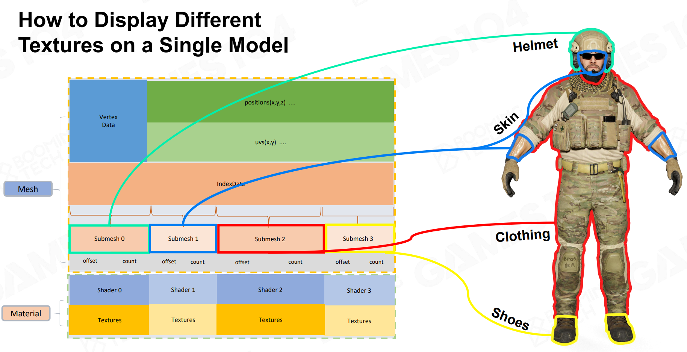
顺带一提啊，SubMesh在UE里是可以设置对应Material的，类似下面这样：
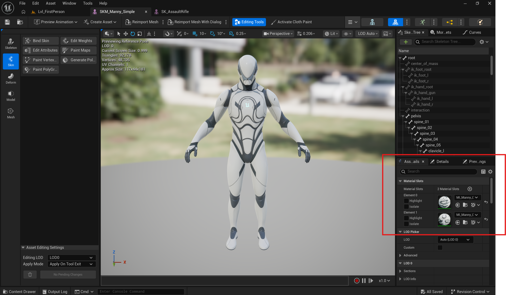
资源池与实例化
如果我们有很多个NPC角色，它们的Mesh和材质都是一样的，我们是否需要对每个NPC都在内存创建上述这么一个数据结构呢？
显然不需要。为了节约内存，现代引擎采用资源池 (Pooling) 的架构。所有同类的资源（Mesh、Texture、Shader）被分别集中存放在一个大的资源池中进行统一管理。这样场景中的GO不再拥有这些数据，而是通过索引去引用资源池中的资源。
资源池中存储的是所谓的“定义数据”，而场景中具体的GO则是“实例化对象”。知道UE里的UPROPERTY宏内的Specifier里有个EditInstanceOnly
吗？它的意思就是这个属性只能在实例化对象上编辑，而不能在定义数据（蓝图类）上编辑。其实实例化这个概念我们应该已经不陌生了。
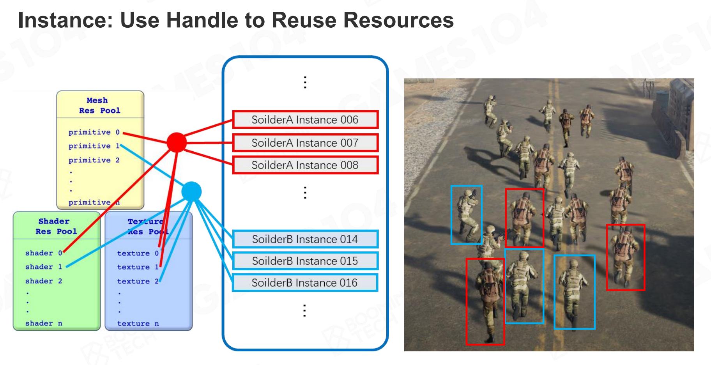
这种定义和实例化的思想十分重要。
渲染效率优化：Sort by Material
我们对GPU需要有一个认识，就是所谓“状态转换”对于性能的损耗之大。当我们绘制一个GO中的不同SubMesh时，如果它们使用了不同的材质，那么GPU就需要在每次切换SubMesh时进行状态转换，重新绑定不同的Shader、Texture等资源，这个过程是非常耗性能的。
一种显而易见的优化想法是在渲染线程中控制我们的渲染顺序，其能够最小化状态转换次数。因此将不同的Material进行归类（即Sort by Material），使得在渲染过程中尽可能连续地渲染使用相同材质的SubMesh，从而减少GPU状态转换的次数，提高渲染效率。
执行流程大致如下： - 在渲染一帧之前，对所有需要绘制的物体根据其材质ID进行排序。 - 渲染时，当遇到一种新材质，CPU 向 GPU 设置一次该材质所需的所有状态（如 Shader、纹理、渲染参数等）。 - 接着，CPU 连续不断地发出绘制指令（Draw Call），将所有使用该材质的 Sub-mesh 全部绘制完毕。 - 直到遇到下一种不同的材质时，才进行下一次状态切换。
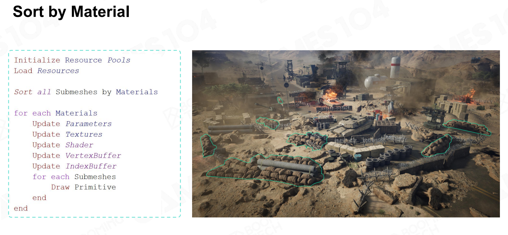
渲染效率优化：GPU Batch Rendering
这里是我自己的理解啊。辩证看待
将上面的优化策略进一步扩展。考虑到游戏场景中可能有很多相同的GO（相同SubMesh但是在不同世界坐标），可以将这些GO的DrawCall进行合并，得到所谓的Batch Rendering（批渲染）。这样就可以进一步减少CPU向GPU发出的DrawCall数量。
思考：这个东西和我们八股里常背的静态合批和动态合批的关系是什么？
TODO
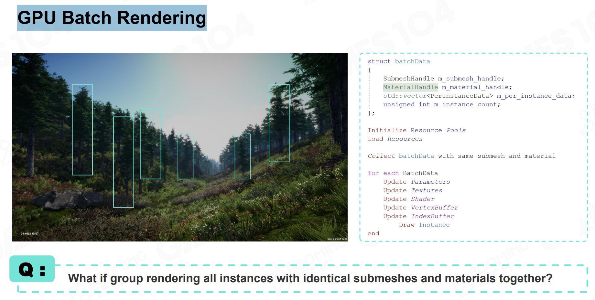
可见性剔除
核心Idea：只画相机看的见的东西。
包围体 (Bounding Volumes)
你如果学过Games101那应该手写过软光栅，在透视除法前我们通常会在Clip Space中以Mesh为单位做视锥剔除。但游戏场景可能有巨tm多的Mesh，直接遍历所有Mesh显然不现实。
因此就有了剪枝的概念（提一嘴这个在算法竞赛中其实是个很常规的思想，通过必要条件进行搜索空间的减少，但主要是为了优化常数，在算法竞赛的场景中大概率不影响算法复杂度，但在游戏场景就不一样了）。
在游戏场景，我们可以用简单的几何体代替复杂的网格模型，进行快速的相交判断。常见包围体类型如下： - 包围球 (Bounding Sphere)：用一个最小的球体包裹物体。相交判断最快（只需比较距离和半径）。 - 轴对齐包围盒 (AABB - Axis-Aligned Bounding Box)：一个各面都与世界坐标系的X、Y、Z轴平行的立方体。仅需存储两个对角顶点即可定义，计算效率极高，是游戏引擎中最常用的包围体之一。 - 有向包围盒 (OBB - Oriented Bounding Box)：紧密贴合物体自身朝向的包围盒，包裹效果比 AABB 更紧密，但相交测试更复杂。（可以认为是模型空间下的AABB？） - 凸包 (Convex Hull)：能够最紧密包裹物体的凸多边形。这个你在物理引擎中可能比较常见。
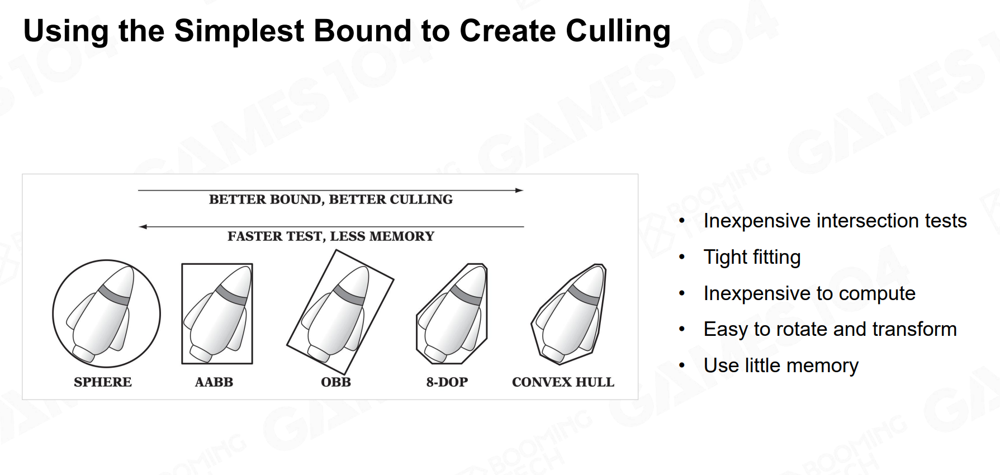
加速剔除：空间划分与BVH
对单个Renderable进行包围体的建立只是第一步。如果场景中有上万个物体，逐一测试它们的包围盒是否在视锥内，效率依然不高。我们需要一种能成批剔除物体的方法。这就需要用到空间划分数据结构。这个东西面试他妈的经常问，绝了。
课程里给了平面常用的四叉树（Quadtree）和BVH（Bounding Volume Hierarchy）两种数据结构。
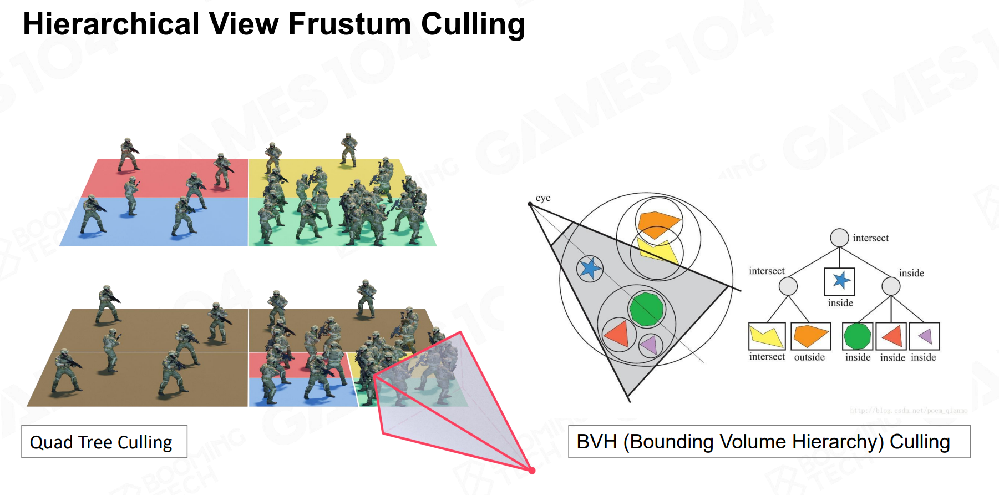
常用的就是BVH。剔除流程大致如下： - 从根节点开始测试，判断其巨大的包围盒是否与视锥体相交。 - 如果根节点的包围盒完全在视锥体外，那么它包含的所有子物体（可能成百上千个）都无需再测试，直接被整批剔除。 - 如果相交或在内部，则递归地对其子节点进行同样的测试。
课程提到BVH特别适合动态场景，可能是动态修改BVH（插入和删除）的成本比较低。至于怎么修改，我咋知道（不是）
PVS (Potentially Visible Set)
核心Idea：对于静态的场景，从某个位置“可能”看到哪些区域，是可以提前计算并存储下来的。可以预处理这些信息进行高效Culling。
它将游戏场景分为一个个独立的Cell，然后连接不同的Cell的东西叫做Portal。对于每个Cell，我们可以预先计算出从这个Cell出发，可能看到哪些其他的Cell（即PVS）。在运行时，当玩家在某个Cell中时，我们只需要渲染这个Cell以及它的PVS中的Cell，从而大幅减少渲染的物体数量。数据结构可以采用BSP树（Binary Space Partitioning Tree）来组织这些Cell和Portal。
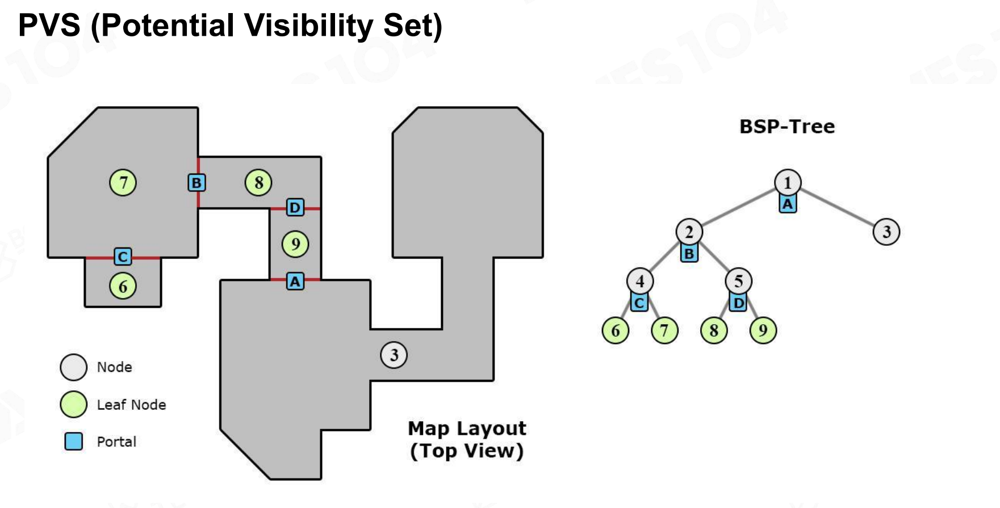
这个算法已经不常用了（在早期Quake和Doom中常用），但是这个思想值得学习。例如在现代3A游戏关卡设计中，常将世界划分为不同的“区域”（Zone）。区域间的可见性关系不仅用于剔除，更关键的是用于指导资源的动态加载与卸载。
GPU Culling
随着 GPU 并行计算能力的飞速发展，许多剔除工作已经从 CPU 转移到了 GPU，以利用其强大的并行处理能力。
这里课程举了个PreZ的例子。它将一次渲染流程分为两个Pass。 1. PreZ Pass：首先使用一个非常简单的Shader（只输出深度信息）来渲染场景。这一步会在GPU的深度缓冲区中记录下每个像素的最远可见距离。 2. Base Pass：正常渲染场景。此时，对于每个要绘制的像素，GPU 会利用 Early-Z 功能，将其深度与 Pre-pass 生成的深度图进行比较。任何被遮挡的像素都会被硬件提前剔除。
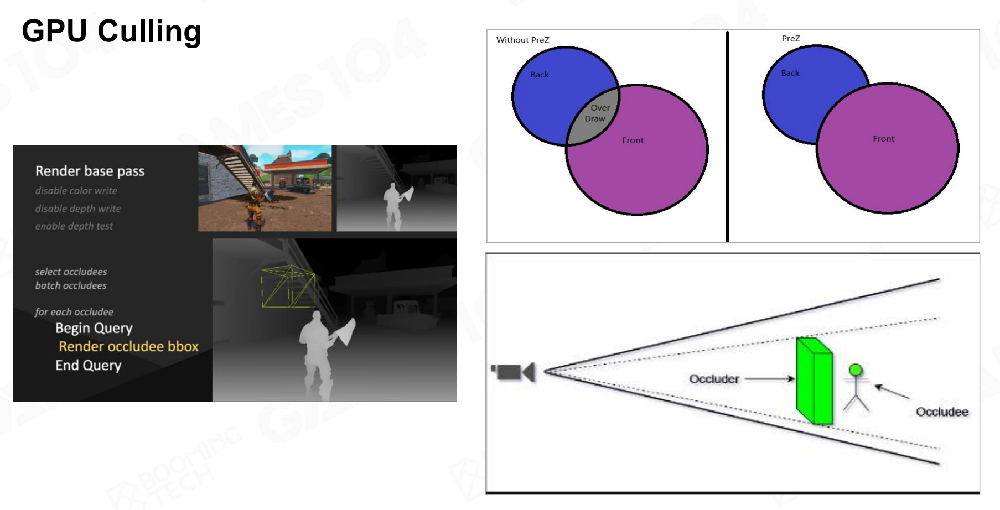
纹理压缩
在游戏引擎中，纹理数据并非以我们熟知的 JPG 或 PNG 格式存在，而是使用专为 GPU 设计的压缩格式。
在游戏中我们对于纹理压缩考虑以下四个要点： - Decoding Speed：GPU能够快速解压缩纹理数据，以满足实时渲染的需求。 - Random Access：GPU能够高效地访问纹理数据的任意位置，支持纹理采样操作。 - Compression Rate and Visual Quality：在保持较高压缩率的同时，尽量减少视觉质量的损失。 - Encoding Speed：虽然不如解压缩速度重要，但在开发过程中，快速生成压缩纹理也是一个考虑因素。
GPU纹理压缩的核心Idea：将整个纹理划分为固定大小的小块（最经典的是 4x4 像素），然后独立地对每个块进行压缩。（就是分治）
以DXT/BCn 系列算法为例： - 对于一个 4x4 的像素块，找出这个块中颜色最亮和最暗（或差异最大）的两个基准色（Color Endpoints），并存储它们。 - 在这两个基准色之间形成一个颜色渐变色板（Palette）。对于块内的每个像素，不再存储其完整的 RGBA 颜色，而是存储一个指向色板的索引（例如，一个2-bit的索引可以表示4个位置）。 - GPU 读取时，只需获取块的两个基准色和索引，就可以在硬件中瞬间重建出像素的近似颜色。
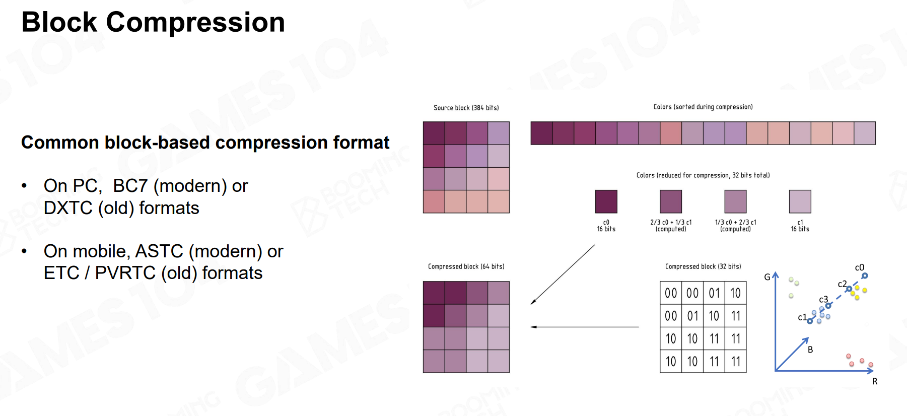
主流3D资产创建方式
- 传统多边形建模通过“点、线、面”的方式，像搭积木一样精确地构建模型。这是最经典、最基础的方法。
- 数字雕刻，模拟真实世界的雕塑过程，通过“推、拉、切、削”等操作，自由地塑造高精度模型，就像在操作一块数字泥巴。
- 3D扫描，利用深度学习和多视角几何重建算法，通过拍摄一个物体的一系列照片，自动重建出其3D模型。
- 程序化生成，通过定义一套规则和算法，让计算机自动生成复杂的模型或场景。
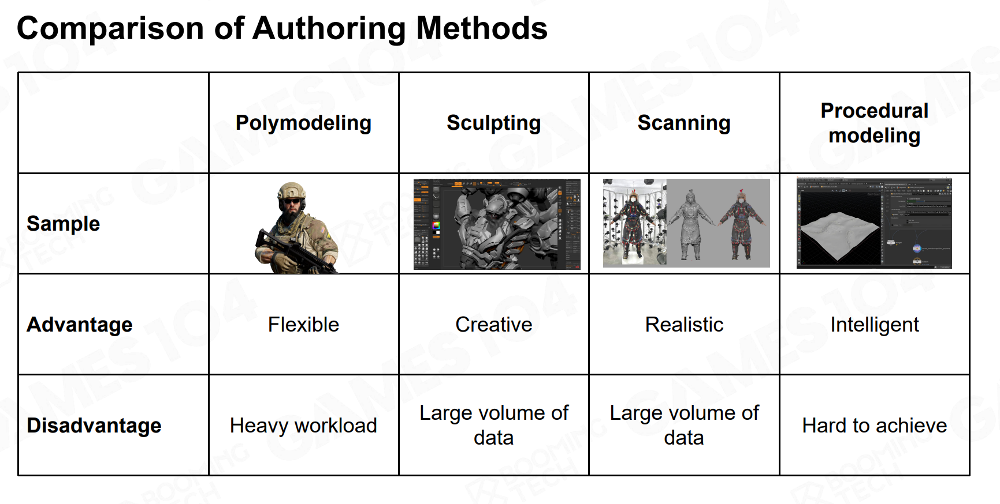
基于 Cluster 的 Mesh Pipeline
为了应对海量几何数据的挑战，业界提出了一种新的渲染管线范式，其核心是 Cluster-based Mesh Pipeline 。
其核心Idea：将一个非常庞大、高精度的模型（例如一条有几十万个面的龙），在预处理阶段就分解成大量微小的、固定大小的几何块。每一个小块被称为一个 Cluster。
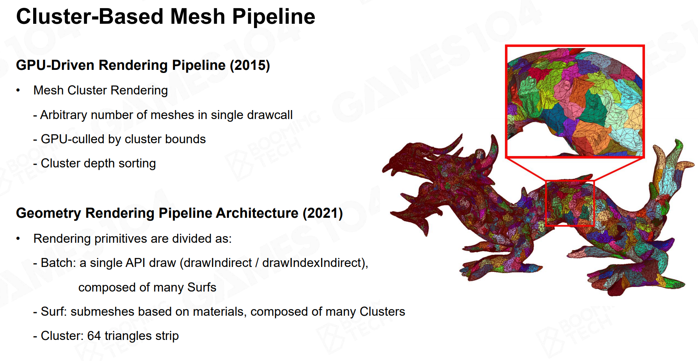
这个东西对应一个更现代的可编程渲染管线：
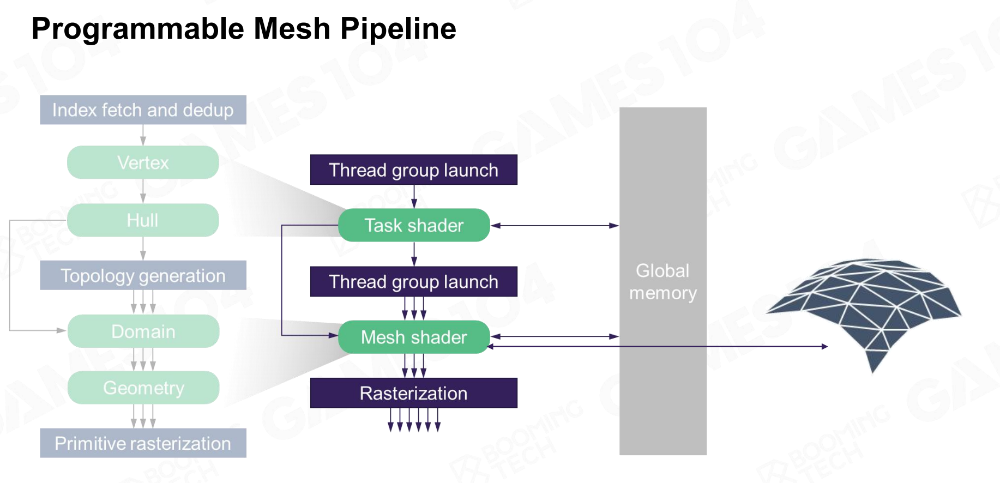
本次课程Takeaway：
- 游戏引擎的设计和硬件架构息息相关
- 通过SubMesh来支持一个拥有多个Material的模型的渲染
- 尽可能使用Culling来加速渲染
- 随着GPU越来越强大，越来越多的工作可以直接交付给GPU，被称为GPU Driven
很明显这节课开始上压力了，讲的又BFS又有点DFS，如果后续做渲染相关的工作可以以这些知识点入手进行进一步探索。